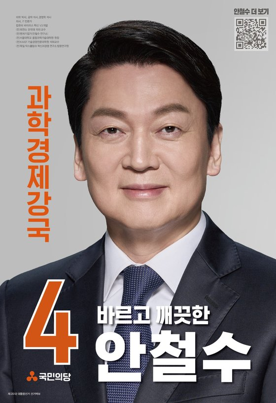

주요 공약
- 5·5·5 신성장전략으로 미래먹거리와 청년일자리 창출하겠습니다
- 자주·실용·평화 책임외교전략으로 한반도 평화통일 추진하겠습니다
- 공적연금 통합하여 청년의 미래, 대한민국의 미래를 지키겠습니다
- 코로나19 자영업 영업시간 제한 폐지하고 150조 손실보상하겠습니다
- 반값 토지임대부 ‘안심주택’으로 내집마련 시대 열겠습니다
- 부모찬스 수시 폐지하고 학제개편으로 창의적 미래교육 하겠습니다
- 강성 귀족노조 혁파하고 공정 시장경제 확립하겠습니다
- 생애주기별 안심복지로 요람에서 무덤까지 국가가 책임지겠습니다
- 책임총리-책임장관제로 제왕적 청와대정부 혁신하겠습니다
- 기후위기시대 탄소중립 추진하고, 스마트 농어촌으로 식량주권 지키겠습니다